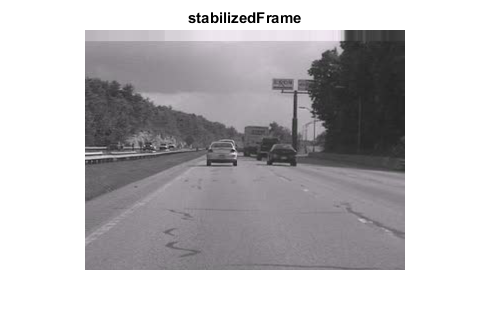

Video Stabilizer
Sources:
Contents
Description of parameters:
- model=(Translation|TranslationAndScale|Rigid|Similarity|Affine|Homography) Set motion model. The default is 'Affine'.
- lin_prog_motion_est=(true|false) Turn on/off LP based motion estimation. Requires CLP library. The default is false.
- subset=(int|auto) Number of random samples per one motion hypothesis. The default is 'auto'.
- thresh=(float|auto) Maximum error to classify match as inlier. The default is 'auto'.
- outlier_ratio=<float> Motion estimation outlier ratio hypothesis. The default is 0.5.
- min_inlier_ratio=<float> Minimum inlier ratio to decide if estimated motion is OK. The default is 0.1.
- nkps=<int> Number of keypoints to find in each frame. The default is 1000.
- extra_kps=<int> Default is 0.
- local_outlier_rejection=(true|false) Perform local outlier rejection. The default is false.
- save_motions=<file_path> Save estimated motions into file. The default is ''.
- load_motions=<file_path> Load motions from file. The default is ''.
- radius=<int> Set sliding window radius. The default is 15.
- stdev=(float|auto) Set smoothing weights standard deviation. The default is 'auto' (i.e. sqrt(radius)).
- lin_prog_stab=(true|false) Turn on/off linear programming based stabilization method. Requires CLP library. Default false
- lps_trim_ratio=(float|auto) Trimming ratio used in linear programming based method.
- lps_w1=<float> 1st derivative weight. The default is 1.
- lps_w2=<float> 2nd derivative weight. The default is 10.
- lps_w3=<float> 3rd derivative weight. The default is 100.
- lps_w4=<float> Non-translation motion components weight. The default is 100.
- deblur=(true|false) Do deblurring.
- deblur_sens=<float> Set deblurring sensitivity (from 0 to +inf). The default is 0.1.
- trim_ratio=<float> Set trimming ratio (from 0 to 0.5). The default is 0.1.
- est_trim=(true|false) Estimate trim ratio automatically. The default is true.
- incl_constr=(true|false) Ensure the inclusion constraint is always satisfied. The default is false.
- border_mode=(Replicate|Reflect|Constant) Set border extrapolation mode. The default is 'Replicate'.
- mosaic=(true|false) Do consistent mosaicing. The default is false.
- mosaic_stdev=<float> Consistent mosaicing stdev threshold. The default is 10.0.
- motion_inpaint=(true|false) Do motion inpainting (requires CUDA support). The default is false.
- mi_dist_thresh=<float> Estimated flow distance threshold for motion inpainting. The default is 5.0.
- color_inpaint=(no|average|ns|telea) Do color inpainting. The defailt is 'no'.
- ci_radius=<float> Set color inpainting radius (for 'ns' and 'telea' options only). The default is 2.0
- wobble_suppress=(true|false) Perform wobble suppression. The default is false.
- ws_lin_prog_motion_est=(true|false) Turn on/off LP based motion estimation. Requires CLP library. The default is false.
- ws_period=<int> Set wobble suppression period. The default is 30.
- ws_model=(Translation|TranslationAndScale|Rigid|Similarity|Affine|Homography) Set wobble suppression motion model (must have more DOF than motion estimation model). The default is 'Homography'.
- ws_subset=(int|auto) Number of random samples per one motion hypothesis. The default is 'auto'.
- ws_thresh=(float|auto) Maximum error to classify match as inlier. The default is 'auto'.
- ws_outlier_ratio=<float> Motion estimation outlier ratio hypothesis. The default is 0.5.
- ws_min_inlier_ratio=<float> Minimum inlier ratio to decide if estimated motion is OK. The default is 0.1.
- ws_nkps=<int> Number of keypoints to find in each frame. The default is 1000.
- ws_extra_kps=<int> Default is 0.
- ws_local_outlier_rejection=(true|false) Perform local outlier rejection. The default is false.
- save_motions2=<file_path> Save motions estimated for wobble suppression. The default is ''.
- load_motions2=<file_path> Load motions for wobble suppression from file. The default is ''.
- gpu=(true|false) Use CUDA optimization whenever possible. The default is false.
- output=<file_path> Set output file path explicitely. The default is 'stabilized.avi'.
- fps=(float|auto) Set output video FPS explicitely. By default the source FPS is used (auto).
- quiet Don't show output video frames.
- logger=(LogToMATLAB|NullLog) Log message to specified sink. Default is 'NullLog'.
Note: some configurations lead to two passes, some to single pass.
Options
default values
opts = struct(); opts.inputPath = ''; opts.model = 'Affine'; opts.lin_prog_motion_est = false; opts.subset = 'auto'; opts.thresh = 'auto'; opts.outlier_ratio = 0.5; opts.min_inlier_ratio = 0.1; opts.nkps = 1000; opts.extra_kps = 0; opts.local_outlier_rejection = false; opts.save_motions = ''; opts.load_motions = ''; opts.radius = 15; opts.stdev = 'auto'; opts.lin_prog_stab = false; opts.lps_trim_ratio = 'auto'; opts.lps_w1 = 1; opts.lps_w2 = 10; opts.lps_w3 = 100; opts.lps_w4 = 100; opts.deblur = false; opts.deblur_sens = 0.1; opts.est_trim = true; opts.trim_ratio = 0.1; opts.incl_constr = false; opts.border_mode = 'Replicate'; opts.mosaic = false; opts.mosaic_stdev = 10.0; opts.motion_inpaint = false; opts.mi_dist_thresh = 5.0; opts.color_inpaint = 'no'; opts.ci_radius = 2.0; opts.wobble_suppress = false; opts.ws_lin_prog_motion_est = false; opts.ws_period = 30; opts.ws_model = 'Homography'; opts.ws_subset = 'auto'; opts.ws_thresh = 'auto'; opts.ws_outlier_ratio = 0.5; opts.ws_min_inlier_ratio = 0.1; opts.ws_nkps = 1000; opts.ws_extra_kps = 0; opts.ws_local_outlier_rejection = false; opts.save_motions2 = ''; opts.load_motions2 = ''; opts.gpu = false; opts.output = ''; opts.fps = 'auto'; opts.quiet = false; opts.logger = 'NullLog';
override options
if mexopencv.require('vision') opts.inputPath = which('shaky_car.avi'); end %opts.model = 'Translation'; %opts.min_inlier_ratio = 0.01; %opts.nkps = 500; %opts.local_outlier_rejection = true; %opts.radius = 150; %opts.deblur = true; opts.est_trim = false; %HACK: otherwise corrupts frames! opts.trim_ratio = 0; %HACK: otherwise corrupts frames! %opts.border_mode = 'Constant'; %opts.mosaic = true; %opts.color_inpaint = 'telea'; %opts.wobble_suppress = true; %opts.ws_local_outlier_rejection = true; opts.output = fullfile(tempdir(), 'stabilized.avi'); opts.gpu = false; %TODO: not yet implemented display(opts)
opts =
struct with fields:
inputPath: 'C:\Program Files\MATLAB\R2017a\toolbox\vision\visiondata\shaky_car.avi'
model: 'Affine'
lin_prog_motion_est: 0
subset: 'auto'
thresh: 'auto'
outlier_ratio: 0.5000
min_inlier_ratio: 0.1000
nkps: 1000
extra_kps: 0
local_outlier_rejection: 0
save_motions: ''
load_motions: ''
radius: 15
stdev: 'auto'
lin_prog_stab: 0
lps_trim_ratio: 'auto'
lps_w1: 1
lps_w2: 10
lps_w3: 100
lps_w4: 100
deblur: 0
deblur_sens: 0.1000
est_trim: 0
trim_ratio: 0
incl_constr: 0
border_mode: 'Replicate'
mosaic: 0
mosaic_stdev: 10
motion_inpaint: 0
mi_dist_thresh: 5
color_inpaint: 'no'
ci_radius: 2
wobble_suppress: 0
ws_lin_prog_motion_est: 0
ws_period: 30
ws_model: 'Homography'
ws_subset: 'auto'
ws_thresh: 'auto'
ws_outlier_ratio: 0.5000
ws_min_inlier_ratio: 0.1000
ws_nkps: 1000
ws_extra_kps: 0
ws_local_outlier_rejection: 0
save_motions2: ''
load_motions2: ''
gpu: 0
output: 'C:\Users\Amro\AppData\Local\Temp\stabilized.avi'
fps: 'auto'
quiet: 0
logger: 'NullLog'
One vs. Two pass stabilizer
determine whether we must use one pass or two pass stabilizer
isTwoPass = opts.est_trim || opts.wobble_suppress || opts.lin_prog_stab; if isTwoPass stab = cv.TwoPassStabilizer(); else stab = cv.OnePassStabilizer(); end display(stab)
stab =
OnePassStabilizer with properties:
id: 1
Radius: 15
TrimRatio: 0
CorrectionForInclusion: 0
BorderMode: 'Replicate'
source video
assert(exist(opts.inputPath, 'file') == 2, 'specify valid video file'); stab.setFrameSource('VideoFileSource', opts.inputPath); vid = stab.getFrameSource(); fprintf('Frame Count (rough): %d\n', vid.Count); if strcmp(opts.fps, 'auto') outputFps = vid.FPS; else outputFps = opts.fps; end display(vid)
Frame Count (rough): 132
vid =
struct with fields:
TypeId: 'class cv::videostab::VideoFileSource'
Width: 320
Height: 240
FPS: 30.0000
Count: 132
prepare motion estimation builders
for stabilizer (prefix="") and wobble suppressor (prefix="ws_")
motionEstBuilder = {};
wsMotionEstBuilder = {};
for prefix = {'', 'ws_'}
getopts = @(name) opts.([prefix{1} name]);
if getopts('lin_prog_motion_est')
est = {'MotionEstimatorL1', 'MotionModel',getopts('model')};
else
ransac = stab.RansacParamsDefault2dMotion(getopts('model'));
if ~strcmp(getopts('subset'), 'auto')
ransac.Size = getopts('subset');
end
if ~strcmp(getopts('thresh'), 'auto')
ransac.Thresh = getopts('thresh');
end
ransac.Eps = getopts('outlier_ratio');
est = {'MotionEstimatorRansacL2', 'MotionModel',getopts('model'), ...
'RansacParams',ransac, 'MinInlierRatio',getopts('min_inlier_ratio')};
end
if getopts('local_outlier_rejection')
ransacParams = stab.RansacParamsDefault2dMotion('Translation');
if ~strcmp(getopts('thresh'), 'auto')
ransacParams.Thresh = getopts('thresh');
end
outlierRejector = {'TranslationBasedLocalOutlierRejector', ...
'RansacParams',ransacParams};
else
outlierRejector = {'NullOutlierRejector'};
end
if opts.gpu
kbest = {'KeypointBasedMotionEstimatorGpu', est, ...
'OutlierRejector',outlierRejector, 'MotionModel',getopts('model')};
else
kbest = {'KeypointBasedMotionEstimator', est, ...
'Detector',{'GFTTDetector', 'MaxFeatures',getopts('nkps')}, ...
'OutlierRejector',outlierRejector, 'MotionModel',getopts('model')};
end
if isempty(prefix{1})
motionEstBuilder = kbest;
else
wsMotionEstBuilder = kbest;
end
end
celldisp(motionEstBuilder)
celldisp(wsMotionEstBuilder)motionEstBuilder{1} =
KeypointBasedMotionEstimator
motionEstBuilder{2}{1} =
MotionEstimatorRansacL2
motionEstBuilder{2}{2} =
MotionModel
motionEstBuilder{2}{3} =
Affine
motionEstBuilder{2}{4} =
RansacParams
motionEstBuilder{2}{5} =
Size: 3
Thresh: 0.5000
Eps: 0.5000
Prob: 0.9900
motionEstBuilder{2}{6} =
MinInlierRatio
motionEstBuilder{2}{7} =
0.1000
motionEstBuilder{3} =
Detector
motionEstBuilder{4}{1} =
GFTTDetector
motionEstBuilder{4}{2} =
MaxFeatures
motionEstBuilder{4}{3} =
1000
motionEstBuilder{5} =
OutlierRejector
motionEstBuilder{6}{1} =
NullOutlierRejector
motionEstBuilder{7} =
MotionModel
motionEstBuilder{8} =
Affine
wsMotionEstBuilder{1} =
KeypointBasedMotionEstimator
wsMotionEstBuilder{2}{1} =
MotionEstimatorRansacL2
wsMotionEstBuilder{2}{2} =
MotionModel
wsMotionEstBuilder{2}{3} =
Homography
wsMotionEstBuilder{2}{4} =
RansacParams
wsMotionEstBuilder{2}{5} =
Size: 4
Thresh: 0.5000
Eps: 0.5000
Prob: 0.9900
wsMotionEstBuilder{2}{6} =
MinInlierRatio
wsMotionEstBuilder{2}{7} =
0.1000
wsMotionEstBuilder{3} =
Detector
wsMotionEstBuilder{4}{1} =
GFTTDetector
wsMotionEstBuilder{4}{2} =
MaxFeatures
wsMotionEstBuilder{4}{3} =
1000
wsMotionEstBuilder{5} =
OutlierRejector
wsMotionEstBuilder{6}{1} =
NullOutlierRejector
wsMotionEstBuilder{7} =
MotionModel
wsMotionEstBuilder{8} =
Homography
set properties and algorithms of stabilizer
if isTwoPass % we must use two pass stabilizer stab.EstimateTrimRatio = opts.est_trim; % determine stabilization technique if opts.lin_prog_stab if strcmp(opts.lps_trim_ratio, 'auto') trimRatio = opts.trim_ratio; else trimRatio = opts.lps_trim_ratio; end stab.setMotionStabilizer('LpMotionStabilizer', ... 'FrameSize',[vid.Width vid.Height], 'TrimRatio',trimRatio, ... 'Weight1',opts.lps_w1, 'Weight2',opts.lps_w2, ... 'Weight3',opts.lps_w3, 'Weight4',opts.lps_w4); else if strcmp(opts.stdev, 'auto') stdev = -1; else stdev = opts.stdev; end stab.setMotionStabilizer('GaussianMotionFilter', ... 'Radius',opts.radius, 'Stdev',stdev); end % init wobble suppressor if necessary if opts.wobble_suppress if opts.gpu ws = 'MoreAccurateMotionWobbleSuppressorGpu'; else ws = 'MoreAccurateMotionWobbleSuppressor'; end motionEstimator = wsMotionEstBuilder; if ~isempty(opts.load_motions2) motionEstimator = {'FromFileMotionReader', opts.load_motions2, ... 'MotionModel',opts.ws_model}; end if ~isempty(opts.save_motions2) motionEstimator = {'ToFileMotionWriter', opts.save_motions2, ... wsMotionEstBuilder, 'MotionModel',opts.ws_model}; end stab.setWobbleSuppressor(ws, 'Period',opts.ws_period, ... 'MotionEstimator',motionEstimator); end else % we must use one pass stabilizer if strcmp(opts.stdev, 'auto') stdev = -1; else stdev = opts.stdev; end stab.setMotionFilter('GaussianMotionFilter', ... 'Radius',opts.radius, 'Stdev',stdev); end
init motion estimator
motionEstimator = motionEstBuilder; if ~isempty(opts.load_motions) motionEstimator = {'FromFileMotionReader', opts.load_motions, ... 'MotionModel',opts.model}; end if ~isempty(opts.save_motions) motionEstimator = {'ToFileMotionWriter', opts.save_motions, ... motionEstBuilder, 'MotionModel',opts.model}; end stab.setMotionEstimator(motionEstimator{:});
stab.Radius = opts.radius; % set up trimming parameters stab.TrimRatio = opts.trim_ratio; stab.CorrectionForInclusion = opts.incl_constr; % border extrapolation mode stab.BorderMode = opts.border_mode; % logger stab.setLog(opts.logger);
init deblurer
if opts.deblur stab.setDeblurer('WeightingDeblurer', 'Radius',opts.radius, ... 'Sensitivity',opts.deblur_sens); end
init inpainter
inpainters = {};
if opts.mosaic
inpainters{end+1} = {'ConsistentMosaicInpainter', ...
'StdevThresh',opts.mosaic_stdev};
end
if opts.motion_inpaint
inpainters{end+1} = {'MotionInpainter', ...
'DistThreshold',opts.mi_dist_thresh};
end
if strcmp(opts.color_inpaint, 'average')
inpainters{end+1} = {'ColorAverageInpainter'};
elseif strcmp(opts.color_inpaint, 'ns')
inpainters{end+1} = {'ColorInpainter', 'Method','NS', ...
'Radius2',opts.ci_radius};
elseif strcmp(opts.color_inpaint, 'telea')
inpainters{end+1} = {'ColorInpainter', 'Method','Telea', ...
'Radius2',opts.ci_radius};
elseif ~strcmp(opts.color_inpaint, 'no')
error('unknown color inpainting method: %s', opts.color_inpaint);
end
if ~isempty(inpainters)
stab.setInpainter('InpaintingPipeline',inpainters, 'Radius',opts.radius);
endrun
writer = cv.VideoWriter(); nframes = 0; if ~opts.quiet hImg = imshow(zeros([vid.Height vid.Width 3], 'uint8')); title('stabilizedFrame') end while true % for each stabilized frame frame = stab.nextFrame('FlipChannels',true); if isempty(frame), break; end nframes = nframes + 1; % init writer (once) and save stabilized frame if ~isempty(opts.output) if ~writer.isOpened() sz = size(frame); writer.open(opts.output, [sz(2) sz(1)], ... 'FourCC','XVID', 'FPS',outputFps); end writer.write(frame); end % show stabilized frame if ~opts.quiet set(hImg, 'CData',frame) drawnow end if true %HACK: break early, processing of few last frames is slow! if nframes > (vid.Count - ceil(opts.radius)) break; end end end clear writer fprintf('processed frames: %d\n', nframes);
processed frames: 118